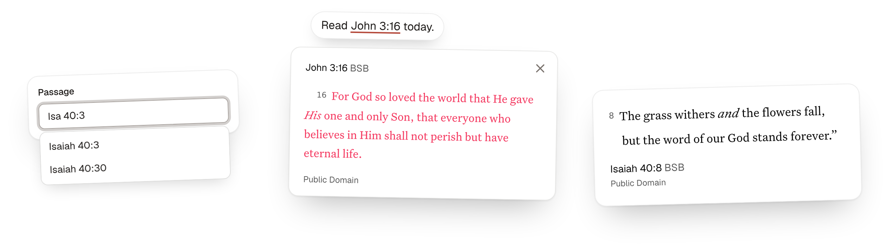

Drop-in Scripture for any web page: show a passage, pick a passage, or bring every Bible reference to life.

A community project. Bible text from HelloAO's Free Use Bible API, with no API key. The YouVersion Platform is also available as an optional provider.
Getting started
Add the script
Cards and passages use HelloAO's Free Use Bible API and the Berean Standard Bible by default. No account or API key is required. The YouVersion Platform is also available as an optional provider.
Add one script tag. It registers the components and finds references on the page.
Show Scripture for Bible references
The script finds references in the page's text, including abbreviations like "Rom 8:28-30", and makes each one
a link. Links lay out exactly like the text they replace, so lines never reflow. Text in code,
pre, links, form fields, and anything marked data-scripture-inline-ignore is skipped.
We started with John 3:16, then read Rom 8:28-30 together. Paul's picture of love in 1 Cor. 13:4–7 stood out, and someone brought up Song of Songs 2:4.
For the week: pray through Ps 23 each morning, memorize 1 John 1:9, and read Gen. 1:1 through the end of the chapter. Meet at 10:30 in room 12.
Code is ignored: John 3:16| Script tag and JavaScript | Default | Purpose |
|---|---|---|
data-providerprovider | helloao | helloao or youversion. JavaScript also accepts a BibleProvider object. |
data-bible-version-idbibleVersionId | Provider default | BSB for HelloAO; 3034 for YouVersion. IDs are provider-specific. |
data-yvp-public-app-keyyvpPublicAppKey | None | Your public app key. Required only for YouVersion. |
data-yvp-api-hostyvpApiHost | YouVersion's API | Another YouVersion API host, for testing. |
data-modemode | card | card opens a Scripture card; link links to route.bible. |
data-triggertrigger | click | hover also opens cards on mouse hover. |
data-yvp-bible-version-idyvpBibleVersionId | 3034 | YouVersion-only alias. bibleVersionId takes precedence. |
data-referencereference | heading | The card's reference layout, as on si-passage. |
root | Whole page | The element to look for references in. Leave it unset on sites that replace <body>. |
watch | true | Also links references in content added later, such as pages that Turbo swaps in. false scans once. Mark content that a framework like React renders with data-scripture-inline-ignore. |
Passage
<si-passage> displays a passage with its required copyright attribution. Attributes choose what
shows. CSS properties choose how it looks, so one rule can style every passage on a page.
| Attribute | Default | Purpose |
|---|---|---|
yvp-public-app-key | The script tag's key | Your public YouVersion Platform app key. It is safe to put in page markup. Only needed to override the key on the script tag. |
provider | The script's provider, or helloao | helloao or youversion. |
bible-version-id | The script's version, or provider default | BSB for HelloAO; 3034 for YouVersion. |
yvp-bible-version-id | 3034 | YouVersion-only alias. bible-version-id takes precedence. |
passage-id | None | A USFM passage, such as ROM.8.28-30, or a whole chapter, ROM.8. Required. |
reference | heading | Where the reference shows: heading, citation, quote, or none. |
verse-numbers | Shown | hide removes verse numbers. |
headings | Shown | hide removes section headings. |
red-letter | On | off shows the words of Jesus in the text color. |
theme | light | light, dark, or auto to follow the system. |
direction | From the passage | ltr or rtl. |
yvp-api-host | YouVersion's API | Another YouVersion API host, for testing. |
| CSS property | Default | Purpose |
|---|---|---|
--scripture-font-size | 20px | The Bible text size. The reference line scales with it. |
--scripture-line-height | 1.625 | Line height of the Bible text. |
--scripture-font-family | Georgia (HelloAO), Untitled Serif (YouVersion) | Font of the Bible text. |
--scripture-max-width | 32rem | Line length of the text, reference, and copyright. |
The passage renders in a shadow root, so page CSS can't change it by accident. To restyle a piece on purpose,
use its part, such as si-passage::part(citation) { font-style: italic; }.
| Part | What it is |
|---|---|
text | The Bible text. |
citation | The reference and version. |
version | The version abbreviation inside the citation. |
attribution | The copyright line and Bible provider credit. |
quote | The block quote in the quote layout. |
loader | The spinner while the text loads. |
error | The message when the text can't load. |
| Event | Detail | When |
|---|---|---|
scripture-load | provider, passageId, bibleVersionId, bibleVersion | The passage is on screen. The version has id, abbreviation, and title. YouVersion also includes the original yvpBibleVersionId and yvpBibleVersion. |
scripture-error | The error | The passage could not load. |
Passage input
<si-passage-input> picks a book, chapter, verse, or range. Focus it to browse every book, or
type: "Roman 8" finds Romans 8, and "Ps 119:" lists all 176 verses. Its value is the passage ID, it submits
with a form under name, and it fires change with detail.passageId.
Value: (empty)
| Attribute | Default | Purpose |
|---|---|---|
value | Empty | The starting passage, as a USFM ID such as JHN.3.16. |
name | None | The form field name. The form submits the passage ID. |
placeholder | None | Hint text in the empty field. |
book-order | canonical | canonical lists books Genesis to Revelation; alphabetical lists them A to Z. |
disabled | Off | Turns the field off. |
| Event | Detail | When |
|---|---|---|
change | passageId, label | The reader picks a passage, or clears the field. passageId is empty when cleared. |
The field renders in a shadow root. It reads the page's --input, --ring,
--radius, --popover, --accent, and --font-sans tokens when
they exist. To restyle it further, use its parts: input, listbox, option,
and count, such as si-passage-input::part(input) { height: 2.5rem; }.
Translation picker
<si-version-input> lets readers filter by language and search translation names or abbreviations, without knowing provider IDs. Arrow keys, Enter, Escape, and form reset work, too. Typing does not change the selection until the reader picks a translation. Failed catalog requests offer Retry.
Value: BSB
| Attribute | Default | Purpose |
|---|---|---|
value | The script's version, or provider default | The selected provider's translation ID, such as BSB. |
name | None | The form field name. The form submits the translation ID. |
language | Selected translation or browser language | A language tag such as en, or all. Filters choices, not the selected passage. |
placeholder | Search translations | Hint text in the search field. |
disabled | Off | Turns the field off. |
provider | The script's provider, or helloao | helloao or youversion. |
yvp-public-app-key | The script tag's key | Your public app key. Required only for YouVersion. |
yvp-api-host | YouVersion's API | Another YouVersion API host, for testing. |
| Event | Detail | When |
|---|---|---|
change | provider, bibleVersionId, bibleVersion | The reader picks a different translation. |
scripture-versions-load | provider, versions | The provider's catalog loads. |
scripture-error | The error | The catalog could not load. |
The value property reads or sets the selected ID. bibleVersion has id, abbreviation, title, and optional language and languageName. An unavailable ID clears the field and marks it invalid. IDs belong to one provider, not a universal catalog. HelloAO's BSB and YouVersion's 3034 both name the Berean Standard Bible, but matching names or abbreviations do not guarantee identical editions.
The field uses the same page style tokens as the passage input. Its parts are language, input, listbox, option, status, and retry.
JavaScript
Building with a bundler? Install @faith-tools/scripture-inline and call the same functions.
| Export | Purpose |
|---|---|
scriptureInline(options) | Finds and links references. Takes the Bible references options and returns { links, stop }; stop() restores the plain text. |
defineScripturePassage(options) | Registers <si-passage>. Provider options set page-wide defaults; attributes override them. |
helloaoProvider | The default provider, using the free-use-bible-api SDK. |
createYouVersionProvider({ yvpPublicAppKey, yvpApiHost }) | Creates the optional YouVersion provider. |
definePassageInput() | Registers <si-passage-input>. |
defineVersionInput(options) | Registers <si-version-input>. Shares provider defaults with defineScripturePassage(). |
listBibleVersions(options) | Returns the provider's catalog as Promise<BibleVersion[]>. Accepts provider options; caches successful requests. |
findReferences(text) | Returns the references in a string, without touching the page. |
Switching providers
YouVersion is optional. To use it, get a public app key from platform.youversion.com and select the provider explicitly:
With a bundler, pass { provider: "youversion", yvpPublicAppKey: "YOUR_PUBLIC_APP_KEY" } to scriptureInline() and defineScripturePassage(). A standalone passage can set provider="youversion" and yvp-public-app-key="YOUR_PUBLIC_APP_KEY".
Migration: Existing YouVersion integrations must add data-provider="youversion", provider="youversion", or provider: "youversion". A public app key alone no longer selects YouVersion. The yvp-* settings and original YouVersion load-event fields remain supported. HelloAO uses translation IDs such as BSB, not YouVersion's numeric IDs.
For another provider, implement the exported BibleProvider interface: id, defaultVersionId, and getPassage(versionId, passageId): Promise<PassageDisplay>. The display contains safe html, version: { id, abbreviation, title }, and an attribution string. Optional fields are safe attributionHtml for links, direction, containerAttributes, and stylesheets. Pass the object as provider to either function, or assign it to a passage's bibleProvider property. The provider attribute takes precedence. Providers must sanitize both HTML fields before returning them.
For the translation picker, also implement listVersions(): Promise<BibleVersion[]>. Assign a custom provider to its bibleProvider property, or pass it to defineVersionInput(). Catalogs are scoped to the provider, including the YouVersion public app key and API host. Switching providers does not guess an equivalent translation.
HelloAO keeps headings, poetry, and words-of-Jesus formatting when supplied by the translation. Its license notice, or the translation name linked to the license, always appears below the text. Both built-in providers add a short source credit with the provider name linked: "Source: HelloAO Free Use Bible API" or "Source: YouVersion Platform". Check the translation's license before use. Passages cannot cross chapters.